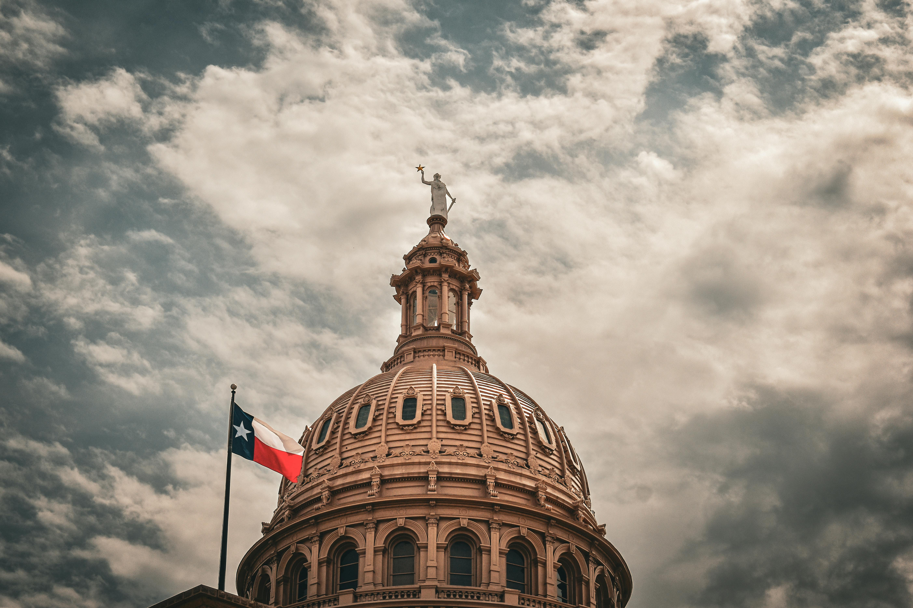
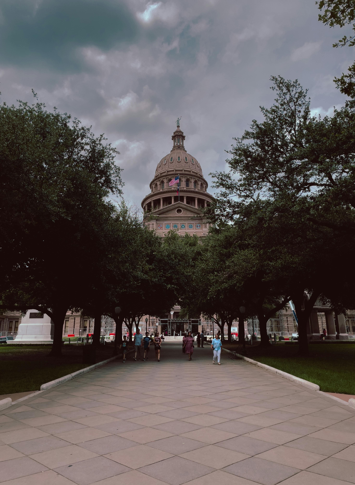
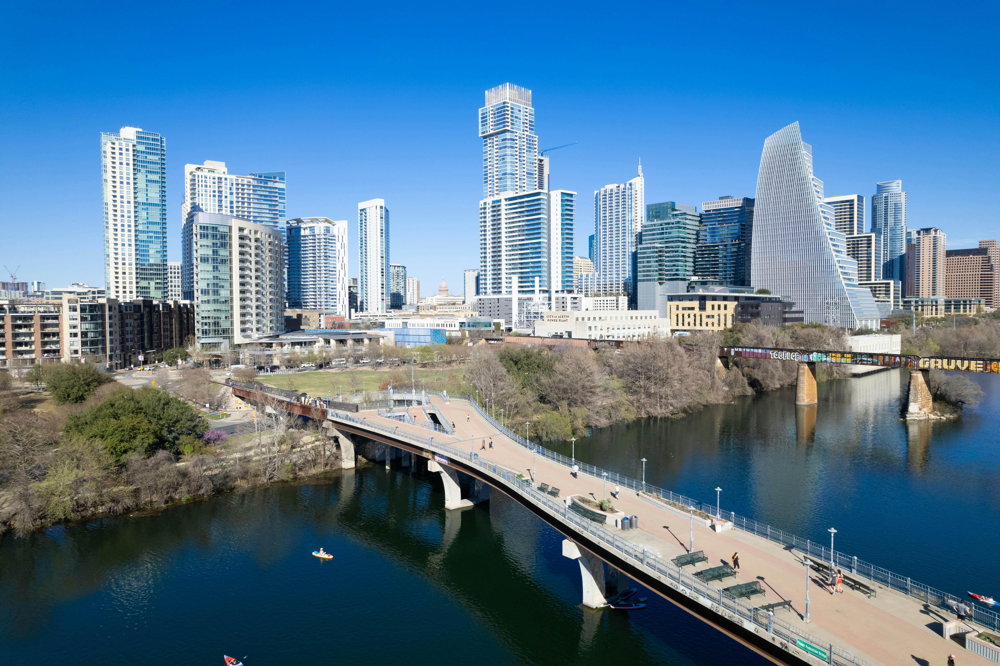

Discover Austin
Austin is known for its live music scene, vibrant culture, and tech industry.
Explore the city’s landmarks, attractions, and cultural events!
Austin is known for its friendly and open-minded residents who embrace the city’s motto, "Keep Austin Weird." The community’s commitment to individuality and local businesses makes it a unique and welcoming place to explore.
| Population | Year Incorporated | Region | Classification | Average Income |
|---|---|---|---|---|
| Approximately 995,484 | 1839 | Central Texas, Hill Country | City, Capital of Texas, Urban | $79,000 |